Sewage Ejector Pump Installation in Temple, TX
When you need a sewage ejector pump installed in Temple, TX, DFJ Plumbing provides dependable service for your basement plumbing needs.
- Fast, Reliable Installation
- Licensed Texas Plumbers
- Upfront Pricing
- Code Compliant Work
Need a Sewage Ejector Pump Installed in Temple, TX?
Our team is ready to provide efficient and reliable plumbing solutions for your home.
Your Trusted Partner for Sewage Ejector Pump Installation in Temple, TX
DFJ Plumbing offers expert sewage ejector pump installation services throughout Temple, TX. These pumps are essential for homes with plumbing fixtures located below the main sewer line, ensuring wastewater is efficiently lifted and discharged.
Our expertise includes:
- Installing Liberty and Zoeller ejector pumps.
- Setting up grinder pump systems for tough waste.
- Ensuring proper pit sizing and venting for new installations.

Additional Plumbing Installation Services in Temple, TX
We install water heaters, pumps, lines, and fixtures across Temple, TX with careful, permitted work that passes inspection the first time.
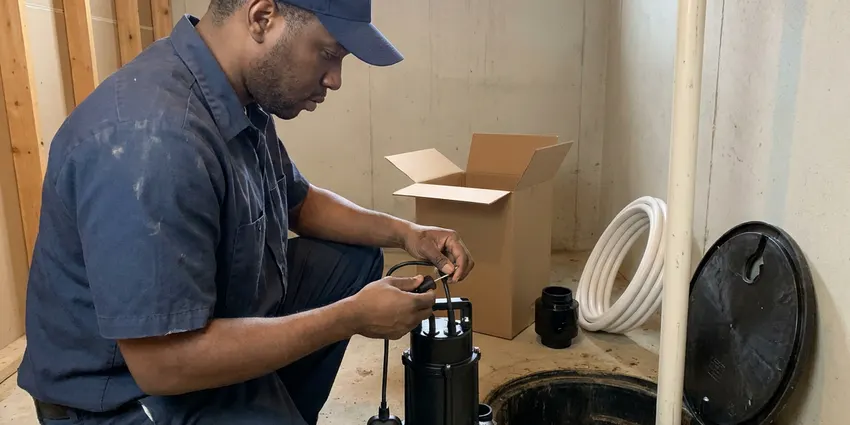
Sump Pump Installation in Temple


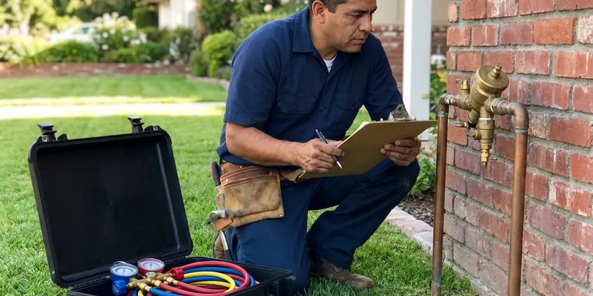
Backflow Preventer Installation in Temple
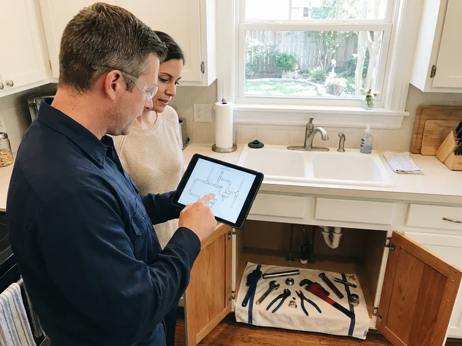
Customers
Why Choose DFJ Plumbing for Sewage Ejector Pump Installation in Temple, TX?
Choosing the right professionals for sewage ejector pump installation ensures long-term reliability and adherence to local plumbing codes. Our team at DFJ Plumbing has extensive experience with these complex systems.
- Code Compliance, All installations strictly follow Texas plumbing codes and local Temple regulations for safe and effective operation.
- Reliable Brands, We install high-quality, durable sewage ejector pumps from trusted manufacturers known for their longevity.
- System Sizing, Our experts accurately size pumps and basins to meet your home's wastewater volume, preventing overload or inefficiency.
Citywide Coverage
We understand the unique plumbing needs across Temple, from older homes with challenging layouts to new constructions requiring precise installations. Our team covers the entire Temple area.
Experienced Team
Our team of licensed plumbers brings years of specialized experience in sewage ejector pump installation. They are regularly trained on the latest technologies and best practices to ensure a flawless setup.
Safety-First Approach
Safety and code compliance are paramount in every sewage ejector pump installation we undertake. We ensure proper venting, electrical grounding, and secure basin sealing to protect your home and family.
Trusted Certified Temple Plumbing Services Professionals
At DFJ Plumbing, we take pride in providing licensed, certified plumbing services throughout Temple, TX. Backed by leading industry credentials, our experienced plumbers combine technical skill with genuine customer care. Whether it is repair, installation, or maintenance, we follow strict safety and quality standards to deliver long-lasting results you can trust.
Call Us NowDependable Sewage Ejector Pump Installation Services in Temple, TX
Residential Sewage Ejector Pump Installation in Temple
DFJ Plumbing specializes in installing sewage ejector pumps for residential properties in Temple. These pumps are crucial for basement bathrooms, laundry rooms, or any plumbing fixtures located below the main sewer line. We ensure the pump's capacity matches your household's demands, preventing potential backups. Our service includes selecting the appropriate basin size, establishing proper venting, and ensuring robust electrical connections. We work with common residential pump brands like Liberty and Zoeller, known for their reliability.
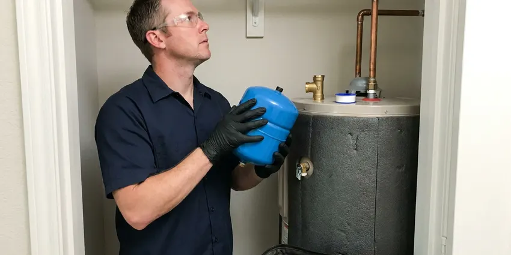
Commercial Sewage Ejector Pump Installation in Temple, TX
For businesses in Temple, TX with below-grade plumbing needs, DFJ Plumbing provides commercial-grade sewage ejector pump installation. Commercial applications often require more powerful pumps and larger basins to handle higher volumes of wastewater and potential solids. We assess your business's specific requirements, from restaurants with grease traps to office buildings with multiple restrooms. Our installations are designed for heavy-duty use and compliance with commercial plumbing codes, minimizing downtime for your operation.
Grinder Pump Installation in Temple
In situations where wastewater contains tougher solids, a grinder pump installation in Temple might be necessary. Unlike standard ejector pumps, grinder pumps macerate waste into a fine slurry before pumping it to the sewer line. This is often required for certain commercial applications or residential setups with specific waste disposal needs. DFJ Plumbing can help you determine if a grinder pump is the right solution, handling the entire installation process from start to finish, including the specialized electrical and discharge piping.
Sewage Ejector Pump Basin Installation in Temple, TX
The basin is a critical component of any sewage ejector pump system. DFJ Plumbing provides professional sewage ejector pump basin installation in Temple, TX, ensuring it is properly sealed, vented, and sized for your pump. An incorrectly installed or undersized basin can lead to frequent pump cycling, premature wear, and even overflows. We use durable, corrosion-resistant basins and ensure all connections are watertight and gas-tight to prevent odors and health hazards in your home or business.
Liberty Pumps Installation in Temple
DFJ Plumbing proudly installs Liberty sewage ejector pumps in Temple. Liberty Pumps are a trusted name in the industry, known for their robust construction and reliable performance. We offer various models to suit different needs, from residential basement applications to light commercial use. Our technicians are experienced with Liberty's product line, ensuring your new pump is installed according to manufacturer specifications for optimal efficiency and a long service life. We can help you choose the best Liberty model for your specific wastewater volume and lift requirements.
Zoeller Ejector Pump Installation in Temple, TX
When you need a dependable Zoeller ejector pump installed in Temple, TX, DFJ Plumbing is your go-to plumbing expert. Zoeller pumps are renowned for their durability and efficiency, making them a popular choice for homeowners and businesses alike. Our team handles the complete installation of Zoeller sewage ejector pumps, ensuring proper pit setup, discharge piping, and electrical connections. We ensure your Zoeller pump operates quietly and effectively, providing peace of mind for your below-grade plumbing needs.
Sump Pump vs. Sewage Ejector Pump Installation in Temple
While both sump pumps and sewage ejector pumps are used to remove water, their applications are distinct. DFJ Plumbing provides expert guidance and installation for both in Temple. A sump pump handles groundwater and storm runoff, typically in a basement's lowest point to prevent flooding. A sewage ejector pump, however, is designed specifically for wastewater containing solids from toilets, sinks, and showers in below-grade plumbing. We ensure you get the correct pump for your specific drainage needs, preventing costly misinstallations.
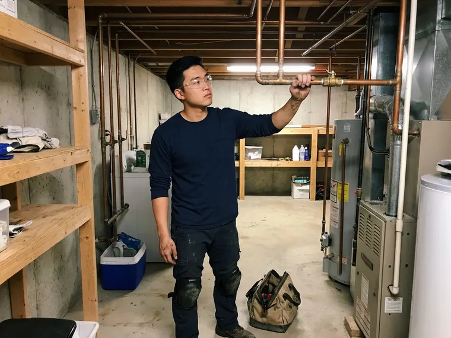
Emergency Ejector Pump Replacement in Temple, TX
If your existing sewage ejector pump in Temple, TX suddenly fails, it can lead to immediate and messy backups. DFJ Plumbing offers emergency ejector pump replacement services to restore your plumbing system quickly. Signs of failure include unusual noises, constant running, or no operation at all. Our team can rapidly diagnose the issue and, if replacement is necessary, install a new, reliable unit to prevent further damage and ensure your below-grade plumbing is back in service as soon as possible.
Sewage Ejector Pump Installation Near Me in Temple, TX
Searching for 'sewage ejector pump installation near me' in Temple, TX? DFJ Plumbing is your local plumbing expert, ready to serve your neighborhood. We dispatch licensed plumbers promptly to assess your needs and provide efficient installation services.
Our commitment to the Temple community means we understand the local plumbing infrastructure and specific requirements for below-grade installations. Trust DFJ Plumbing for reliable, code-compliant sewage ejector pump solutions close to home.
DFJ Plumbing at a Glance
- Licensed and insured plumbers serving Temple, TX
- Same-day appointments and 24/7 emergency response
- Clear written estimates, no hidden fees
- 4.9-star rated by 812+ Texas customers
Temple Map
Temple Information
- Population
- 93,095
- Area codes
- 254/979/361
- Service area
- Temple and communities within 40 miles
- Nearby
- Killeen, Waco, Georgetown, Round Rock
Proper sewage ejector pump installation is crucial for many Temple, TX homes, especially those with basements or lower-level plumbing, due to variable soil conditions and the need to manage wastewater effectively against city sewer lines.
Expert Services
Trust our professionals for reliable DFJ Plumbing solutions in Temple, TX.
Our Specialized Plumbing Services in Temple, TX
At DFJ Plumbing, we provide a complete range of plumbing services across Temple, TX. From leak detection to full system installations, our team ensures fast, precise, and affordable service for both residential and commercial properties. Explore our core services below:
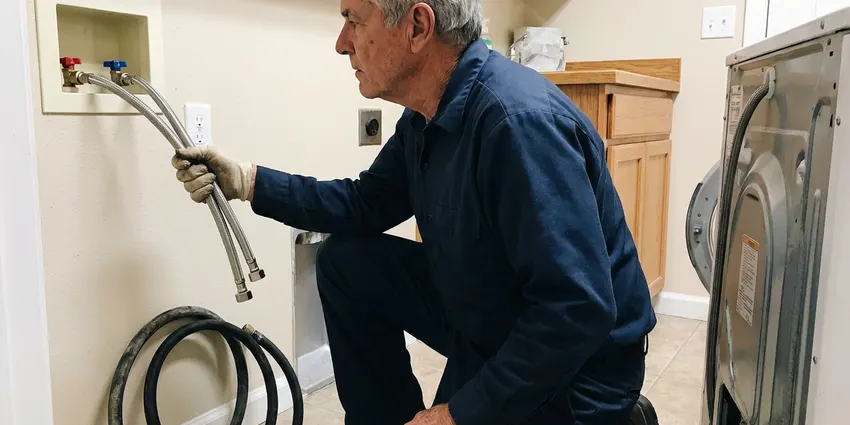
Local plumbing repair by DFJ Plumbing, Temple
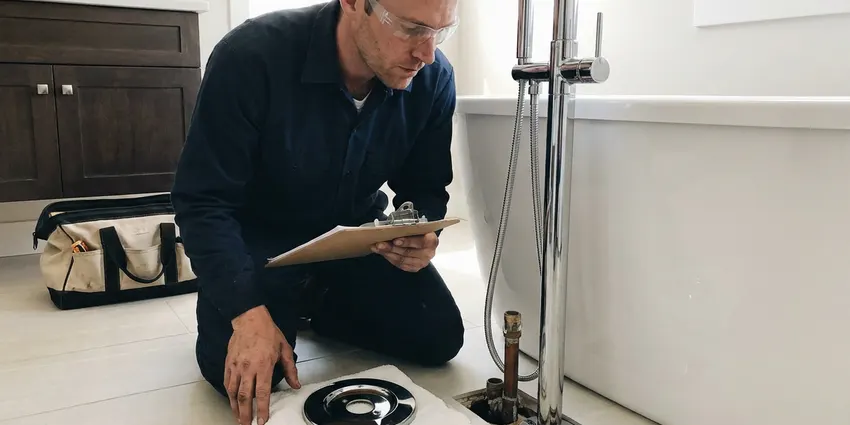
Temple bathroom plumbing specialists
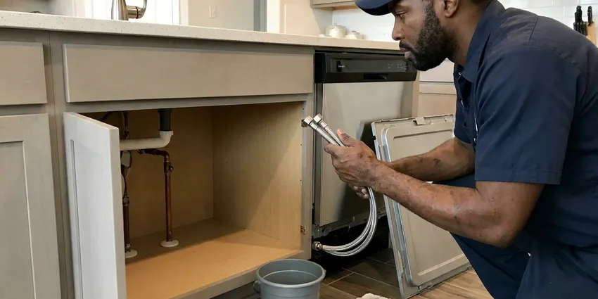
Kitchen Plumbing near Temple
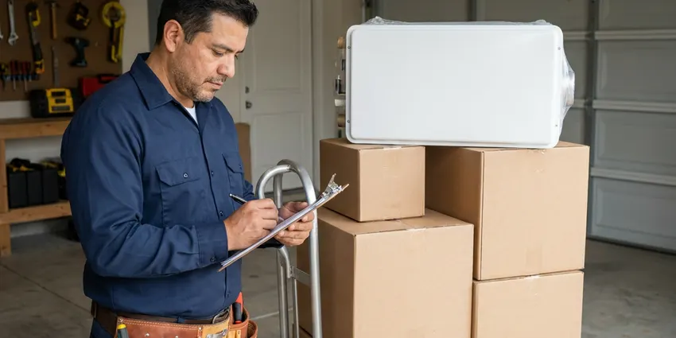
Temple plumbing installation specialists
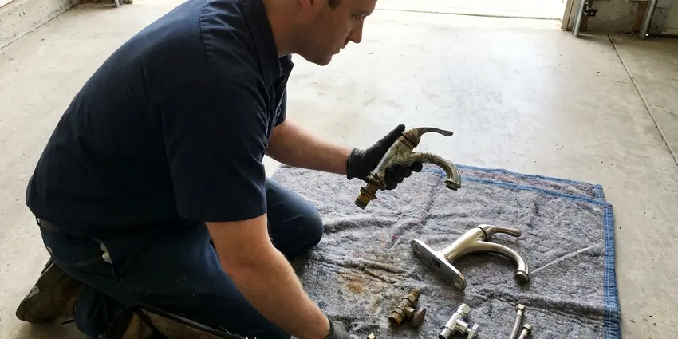
Plumbing Replacement in Temple
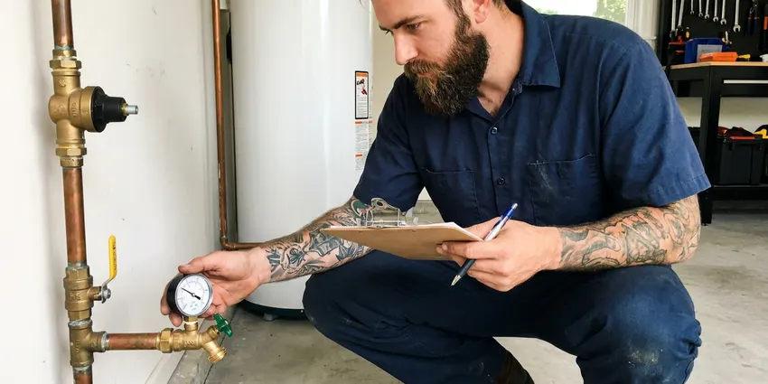
Temple plumbing maintenance specialists
How Our Sewage Ejector Pump Installation Process Works in Temple, TX
DFJ Plumbing follows a systematic approach to ensure every sewage ejector pump installation in Temple, TX is done right the first time.
Request a Quote
Call (737) 405-5978 or fill out our online form to schedule an appointment. We will discuss your needs and provide a clear, upfront estimate for your sewage ejector pump installation project.
Site Assessment
Our licensed plumber will visit your Temple home to evaluate the installation site, determine the optimal pump type and size, and plan for proper piping and electrical connections.
Professional Installation
We handle the complete installation, including excavation for the basin, setting the pump, connecting discharge lines, installing check and gate valves, and ensuring all electrical work meets code.
Frequently Asked Questions About Sewage Ejector Pump Installation in Temple
The cost for sewage ejector pump installation in Temple typically ranges from $2,500 to $5,000. This price can vary depending on factors like the pump type, basin size, complexity of the plumbing and electrical work required, and whether an existing system needs to be removed. We provide a detailed quote after assessing your specific project.
DFJ Plumbing offers a comprehensive warranty on all sewage ejector pump installations, covering both parts and labor. The specific warranty period can vary based on the pump manufacturer's warranty and our service guarantee. We will provide full details on your warranty coverage before starting any work.
A standard sewage ejector pump installation usually takes between one to two days. This includes excavating the pit, setting the basin and pump, connecting the plumbing, and completing the electrical hookups. More complex installations, like those requiring significant trenching or electrical panel upgrades, may take longer.
With proper installation and regular maintenance, a high-quality sewage ejector pump can last between 7 to 15 years. Factors such as usage frequency, the type of waste it handles, and water quality can influence its lifespan. Annual inspections can help maximize its longevity.
We primarily install high-quality, reputable brands such as Liberty Pumps and Zoeller. These manufacturers are known for their durability, reliability, and efficient performance, ensuring a long-lasting solution for your home. We can discuss the best brand and model for your specific needs.
Common signs that you might need a new sewage ejector pump include the pump running constantly, not turning on at all, making unusual grinding or loud noises, or if you notice foul odors or sewage backing up into your basement fixtures. These symptoms indicate a failing unit that requires immediate attention.
Yes, in most cases, a plumbing permit from the City of Temple is required for sewage ejector pump installation. This ensures the work complies with local building and plumbing codes. DFJ Plumbing will assist you with securing the necessary permits and ensure all work passes inspection.
A sump pump is designed to remove groundwater from a basement or crawl space, preventing flooding. A sewage ejector pump, however, is specifically engineered to handle wastewater containing solids from toilets, sinks, and showers in areas below the main sewer line. They are not interchangeable and serve different purposes.
What People Are Saying About Our Plumbing Experts?
James P.
Our commercial plumbing system had a leak under the sink, and DFJ Plumbing handled it professionally. The plumbers arrived quickly and restored everything without disruption to our customers.
Commercial Plumbing · Pflugerville, TXPatricia H.
We had a slab leak that two other companies could not find. DFJ Plumbing located it in under an hour, explained our options, and the price matched the quote to the dollar.
Slab Leak Repair · Georgetown, TXSofia M.
Two new toilets installed in one visit, no mess left behind, and the tech even adjusted a faucet he noticed was dripping. Fair pricing and really friendly.
Toilet Installation · Waco, TXEmily R.
I called DFJ Plumbing for plumbing repair, and the technician was fast, polite, and thorough. They explained the problem clearly and fixed it the same day. I will definitely hire them again. Highly recommended!
Plumbing Repair · Leander, TXLaura S.
I scheduled a water heater replacement, and the team made the process smooth and affordable. The new unit works perfectly, and they cleaned up after completing the job.
Water Heater Replacement · Georgetown, TXMark T.
When our office needed drain cleaning, DFJ Plumbing provided quick, reliable service. The plumber arrived on time and made sure every drain flowed perfectly before leaving. Very satisfied.
Drain Cleaning · Killeen, TX